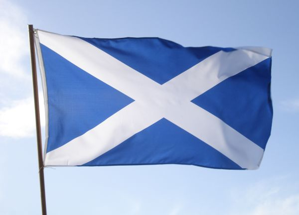
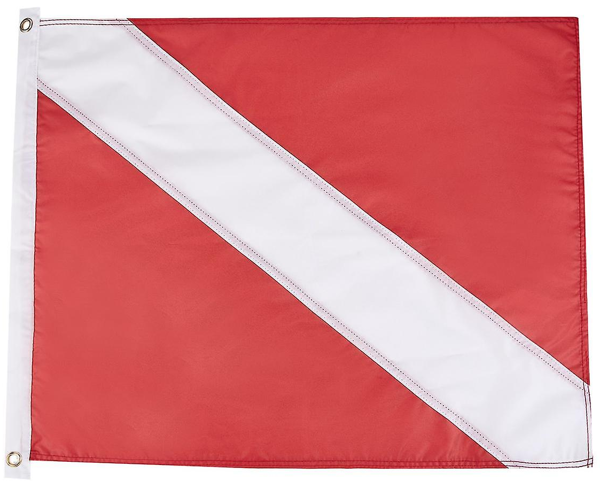

Belgium
Csehország
Dánia
Egyesült
Királyság
Észtország
Finnország
Franciaország
Görögország
Lengyelország
Litvánia
Luxemburg
Magyarország
Németország
Olaszország
Spanyolország
Svédország
Szlovákia
Szlovénia
A zászló általában stratégiai segédeszköz, amely azt a célt szolgálta, hogy nagy távolságból is áttekinthetők legyenek az egyes csapat-egységek. Később szimbólummá vált, hirdetve egy-egy csapat-egység dicsőségét, egy nemzet vagy egy személy jelképe, rúdra erősített egyedi megkülönböztető jelkép, minden oldalról felismerhető, könnyű, hordozható, átveszi és meg is haladja a címer szerepét szélesebb alkalmazhatóság a miatt.
Régen háborúkban használták a csapatok elkülönítésére és vezénylésére. A legelterjedtebb jelzés egy csapat, vagy küldöttség származási ország átjelölendő. Erősen rányomja színvilágára a bélyegét a hadseregtől való származtatás.
Leggyakrabban élénk színeket használnak. Vannak különféle jelzésekre és reklámozásra használt zászlók. Habár hasonló szimbólumokat már a legelső civilizációk is használtak, modern megjelenésének körülményei a mai napig vita tárgyát képezik. Jó páran Kínára gondolnak, míg mások a Római Birodalomban használt vexillumot tartják a mai zászlók ősének. Eredetileg nem zászlókat használtak a római légiók jelzésre, hanem más eszközöket, mint például a sast Augustus X. légiójánál. A középkorban zászlókat leg inkább a vezetők meg különböztetésére használtak. Európában a lovag ok, Japánban a szamurájok, Kínában a tábornokok használták. Kolumbusz Kristóf felfedezéseinek idejétől szokás (és később törvényi előírás) volt a hajók nemzetiségét zászlóval jelölni. Ezek a mai nemzeti zászlók és hajózási zászlók elődjei. Ma is zászlókat használnak a nemzetközi tengeri kommunikációban. Lásd Nemzetközi hajózási jelzőzászlók.
A 17. század végétől a lovagok helyét egyre inkább átvették a szervezett hadseregek, és a zászlók már nemcsak a nemzetiséget, hanem a csapatot is jelölték. Ettől kezdve a zászló megszerzése egyet jelentett a győzelemmel. Mivel nagyon sok gondot okozott a zászlóvivőnek, ezért az első világháború óta csak ünnepi alkalmakkor használják.
A legelterjedtebb feladata egy zászlónak egy nép vagy ország szimbolizálása. Pár példa erre: a skót zászló valószínűleg a legrégebbi ma is használt nemzeti zászló az andráskereszttel.
Más országok, amik szintén használják ezt a szimbólumot: Jamaica, Oroszország tengeri zászlói, Nova Scotia, Egyesült Királyság. Dánia zászlaja a legrégibb ma is használatban lévő országhoz kapcsolódó zászló. Ez adta az ötletet a többi észak-európai ország zászlajához is, így például a Feöeri, a finn, a svéd, az izlandi, és a norvég zászlókhoz. Svájc zászlaja adta a Nemzetközi Vöröskereszt zászlajának ötletét. Hollandia zászlaja a legrégebbi trikolor. 1572-től a herceg zászlaja narancssárga –fehér – kék lett. Nem sokkal később a narancssárgát pirosra cserélték. 1630-tól ez a három szín lett a legkedveltebb a trikolór készítésénél. Oroszország, India és Franciaország zászlaja is innét vették az ötletet. A nemzeti zászló a nemzet minden polgára számára az egyik legfontosabb jelkép, amely kifejezi az identitást és a polgárok összetartozását.
Tisztelet a zászló iránt, ha mindenki tisztában van annak helyes használatával. Egy nemzeti zászló alá nem lehet felvonni egy másikat. Ha több zászló lobog egy helyen, mindegyik rúdnak, azonos hosszúságúnak, a zászlók méretének pedig azonosnak kell lennie. Nemzetközi rendezvények alkalmával a zászlókat az országok angol nevének sorrendjében kell felvonni. Két állam esetén a vendéglátó ország zászlója kerüljön baloldalra.
Ezek önálló hadsereggel rendelkező országok zászlai, melyeket háborúsorán használnak. Vannak országok (mint például az Egyesült Királyság vagy a náci Németország) saját zászlót készítettek erre a célra, mely eltér a nemzeti zászlótól. Ezeket hívják kifejezetten hadi lobogóknak. Más államok (mint az USA vagy Svájc) a nemzeti zászlót használják. A Fülöp-szigetek ugyanazt a zászlót használja, de hadi események alkalmával megfordítják a színeket. Szintén így hívják a tengerészetnél használt zászlókat.
A zászlók rendkívül fontosak a tengeren, ahol ezek jelentik a különbséget élet és halál között, és itt a zászlók, és azok mozgatása rendkívül pontosan szabályoz. A kereskedőhajók és a jachtok kiteszik annak az országnak a zászlóját, amelyikben a hajót bejegyezték, és a személyzet tagjainak nemzetiségére utaló zászlókat. Néhány országban a jachtok zászlaja különbözik a kereskedelmi hajók zászlóitól, hogy jelezzék, a jacht szállítmánya nem igényel vámkezelést. Ha még is kereskedelmi árut szállít a hajó, akkor ezt a legtöbb jogrendszer csempészésnek minősíti. A számok és betűk jelzésére szabályozott nemzetközi rendszer létezik. Minden jelzőzászlónak megvan a saját jelentése.
Mivel könnyen és egyértelműen lehet vele jelezni, ezért elterjedt a sportban is. Az amerikai és a kanadai futballban zászlóval jelzik, ha valami nem szabályszerű a játék folyamán. Az előbbiben sárga, az utóbbiban piros zászlót használnak. Az autó- és motorversenyeken ezek segítségével kommunikálnak a vezetővel. Ezek közül a legismertebb a fekete-fehér kockás zászló. Ezzel intik le a győztest. Sárga zászló jelzi, ha valami miatt lassabban kell menni a megszokottnál, piros zászlót pedig a verseny felfüggesztésekor használnak. Fekete zászló jelzi a büntetéseket. A labdarúgásban az asszisztens a partvonalon különböző zászlókat tart. Ezzel jeleznek, ha szabálytalanság történik a pályán, vagy ha bedobás, szöglet következik. Ráadásul a szurkolók majdnem minden sportágban zászlókat lengetve szurkolnak sportolójuknak, csapatuknak. A legtöbb csapatnak van saját zászlaja, egyéni versenyeken pedig a szimpatikus versenyző országának zászlaját lengetik. A gall labdarúgásban és a hurlingban zöld zászló jelzi a gólt, és fehér zászló a pontot. Az ausztrál futballban két zászlót lengetnek gól, egy zászlót pont esetén.
Partjelzői zászlók (labdarúgás)
Rajt-cél zászló (motorverseny)
Úszózászlók
